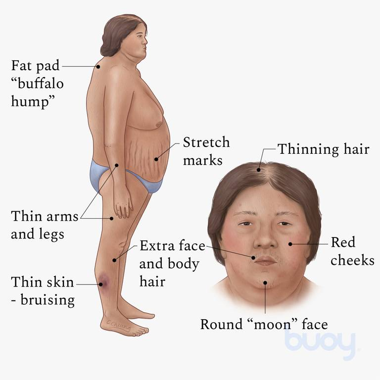

Cushing’s disease.

SYMPTOMS:
- weight gain
-
fatty deposits, especially in the midsection, the face (causing a round, moon-shaped face), and between the shoulders and the upper back (causing a buffalo hump)
purple stretch marks on the breasts, arms, abdomen, and thighs
-
thinning skin that bruises easily
-
skin injuries that are slow to heal
-
acne
-
fatigue
-
muscle weakness
CAUSES
- regulating blood pressure and the cardiovascular system
-
reducing the immune system’s inflammatory response
-
converting carbohydrates, fats, and proteins into energy
balancing the effects of insulin
-
responding to stress
DIAGNOSIS
- Blood adrenocorticotropin hormone (ACTH) test: Levels of ACTH in the blood are measured. Low levels of ADTH and high levels of cortisol could indicate the presence of a tumor on the adrenal glands.
-
Corticotropin-releasing hormone (CRH) stimulation test: In this test, a shot of CRH is given. This will raise levels of ACTH and cortisol in people with pituitary tumors.
-
High-dose dexamethasone suppression test: This is the same as the low-dose test, except that a higher dose of dexamethasone is used. If cortisol levels drop, you may have a pituitary tumor. If they don’t you may have an ectopic tumor.
-
Petrosal sinus sampling: Blood is drawn from a vein near the pituitary and also from a vein far away from the pituitary. A shot of CRH is given. High levels of ACTH in the blood near the pituitary can indicate a pituitary tumor. Similar levels from both samples indicate an ectopic tumor.
-
Imaging studies: These can include things like CT and MRI scans.They’re used to visualize the adrenal and pituitary glands to look for tumors.
TREATMENT
- The overall goal of Cushing’s syndrome treatment is to lower the levels of cortisol in your body. This can be accomplished in several ways. The treatment that you receive will depend on what’s causing your condition.
-
Your healthcare provider may prescribe a medication to help manage cortisol levels. Some medications decrease cortisol production in the adrenal glands or decrease ACTH production in the pituitary gland. Other medications block the effect of cortisol on your tissues.